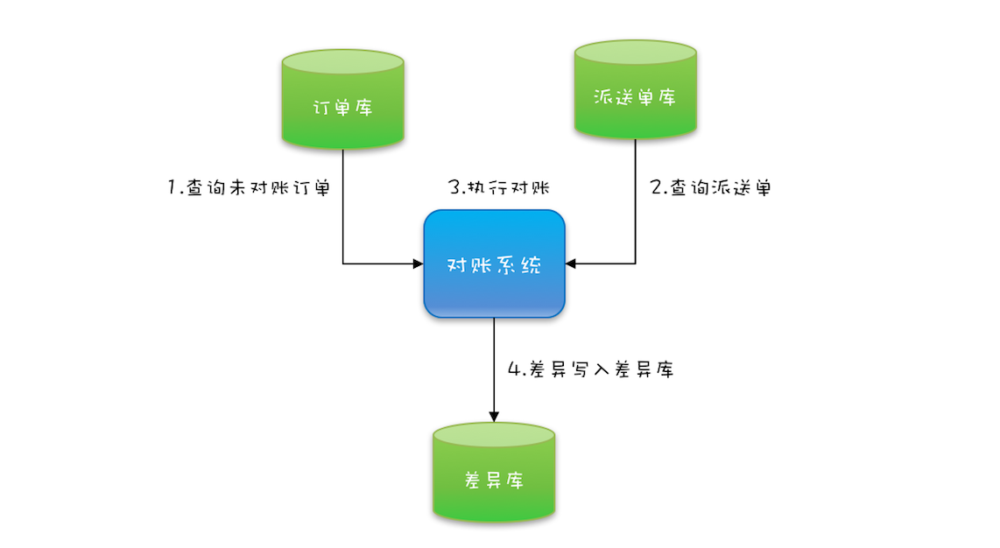
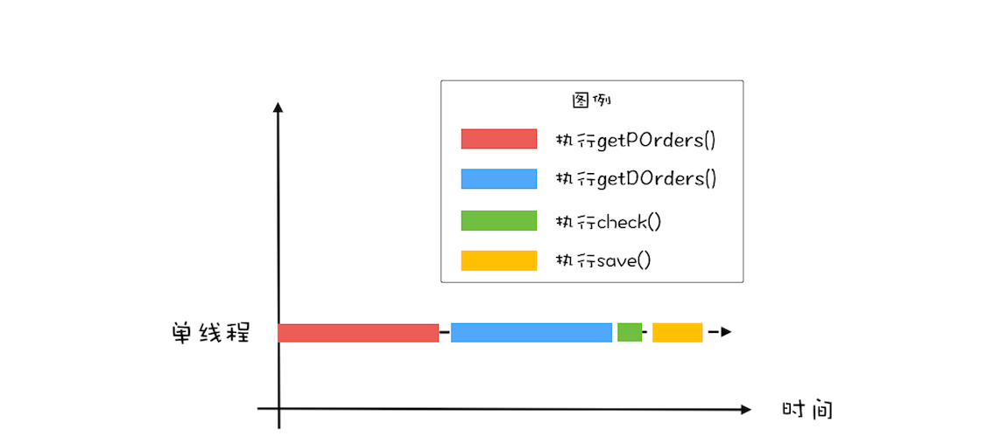
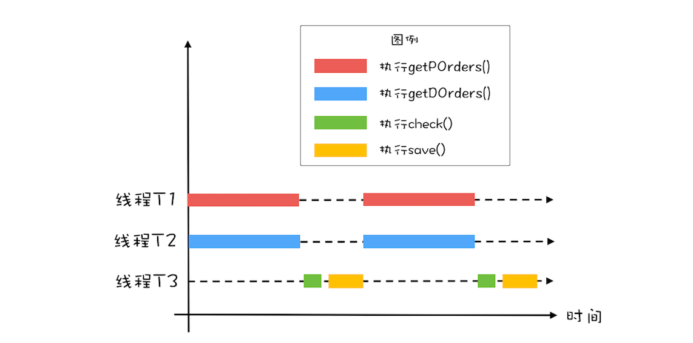
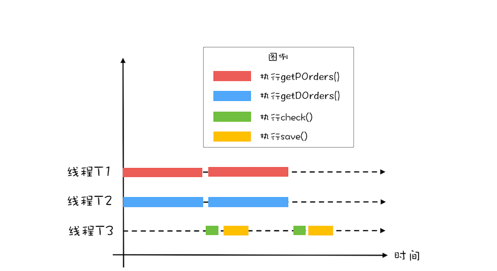
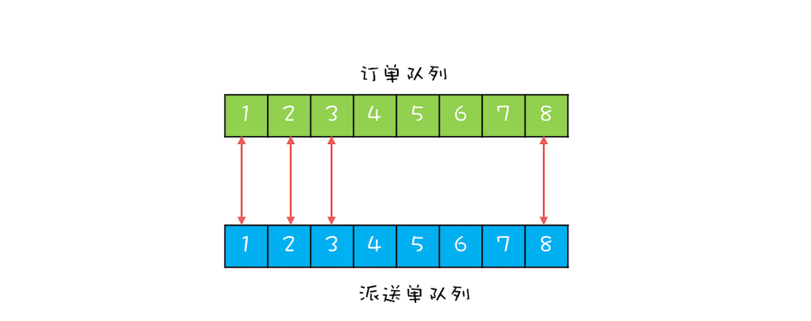
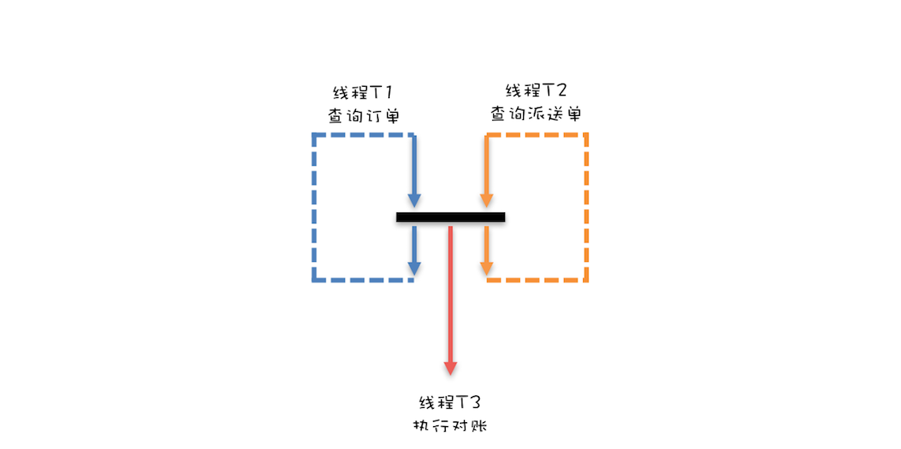

- 00 学习攻略 如何才能学好并发编程？.md.html
- 00 开篇词 你为什么需要学习并发编程？.md.html
- 01 可见性、原子性和有序性问题：并发编程Bug的源头.md.html
- 02 Java内存模型：看Java如何解决可见性和有序性问题.md.html
- 03 互斥锁（上）：解决原子性问题.md.html
- 04 互斥锁（下）：如何用一把锁保护多个资源？.md.html
- 05 一不小心就死锁了，怎么办？.md.html
- 06 用“等待-通知”机制优化循环等待.md.html
- 07 安全性、活跃性以及性能问题.md.html
- 08 管程：并发编程的万能钥匙.md.html
- 09 Java线程（上）：Java线程的生命周期.md.html
- 10 Java线程（中）：创建多少线程才是合适的？.md.html
- 11 Java线程（下）：为什么局部变量是线程安全的？.md.html
- 12 如何用面向对象思想写好并发程序？.md.html
- 13 理论基础模块热点问题答疑.md.html
- 14 Lock和Condition（上）：隐藏在并发包中的管程.md.html
- 15 Lock和Condition（下）：Dubbo如何用管程实现异步转同步？.md.html
- 16 Semaphore：如何快速实现一个限流器？.md.html
- 17 ReadWriteLock：如何快速实现一个完备的缓存？.md.html
- 18 StampedLock：有没有比读写锁更快的锁？.md.html
- 19 CountDownLatch和CyclicBarrier：如何让多线程步调一致？.md.html
- 20 并发容器：都有哪些“坑”需要我们填？.md.html
- 21 原子类：无锁工具类的典范.md.html
- 22 Executor与线程池：如何创建正确的线程池？.md.html
- 23 Future：如何用多线程实现最优的“烧水泡茶”程序？.md.html
- 24 CompletableFuture：异步编程没那么难.md.html
- 25 CompletionService：如何批量执行异步任务？.md.html
- 26 Fork_Join：单机版的MapReduce.md.html
- 27 并发工具类模块热点问题答疑.md.html
- 28 Immutability模式：如何利用不变性解决并发问题？.md.html
- 29 Copy-on-Write模式：不是延时策略的COW.md.html
- 3 个用户来信 打开一个新的并发世界.md.html
- 30 线程本地存储模式：没有共享，就没有伤害.md.html
- 31 Guarded Suspension模式：等待唤醒机制的规范实现.md.html
- 32 Balking模式：再谈线程安全的单例模式.md.html
- 33 Thread-Per-Message模式：最简单实用的分工方法.md.html
- 34 Worker Thread模式：如何避免重复创建线程？.md.html
- 35 两阶段终止模式：如何优雅地终止线程？.md.html
- 36 生产者-消费者模式：用流水线思想提高效率.md.html
- 37 设计模式模块热点问题答疑.md.html
- 38 案例分析（一）：高性能限流器Guava RateLimiter.md.html
- 39 案例分析（二）：高性能网络应用框架Netty.md.html
- 40 案例分析（三）：高性能队列Disruptor.md.html
- 41 案例分析（四）：高性能数据库连接池HiKariCP.md.html
- 42 Actor模型：面向对象原生的并发模型.md.html
- 43 软件事务内存：借鉴数据库的并发经验.md.html
- 44 协程：更轻量级的线程.md.html
- 45 CSP模型：Golang的主力队员.md.html
- 用户来信 真好，面试考到这些并发编程，我都答对了！.md.html
- 结束语 十年之后，初心依旧.md.html
- 捐赠
19 CountDownLatch和CyclicBarrier：如何让多线程步调一致？
前几天老板突然匆匆忙忙过来，说对账系统最近越来越慢了，能不能快速优化一下。我了解了对账系统的业务后，发现还是挺简单的，用户通过在线商城下单，会生成电子订单，保存在订单库；之后物流会生成派送单给用户发货，派送单保存在派送单库。为了防止漏派送或者重复派送，对账系统每天还会校验是否存在异常订单。
对账系统的处理逻辑很简单，你可以参考下面的对账系统流程图。目前对账系统的处理逻辑是首先查询订单，然后查询派送单，之后对比订单和派送单，将差异写入差异库。

对账系统流程图
对账系统的代码抽象之后，也很简单，核心代码如下，就是在一个单线程里面循环查询订单、派送单，然后执行对账，最后将写入差异库。
while(存在未对账订单){
// 查询未对账订单
pos = getPOrders();
// 查询派送单
dos = getDOrders();
// 执行对账操作
diff = check(pos, dos);
// 差异写入差异库
save(diff);
}
利用并行优化对账系统
老板要我优化性能，那我就首先要找到这个对账系统的瓶颈所在。
目前的对账系统，由于订单量和派送单量巨大，所以查询未对账订单getPOrders()和查询派送单getDOrders()相对较慢，那有没有办法快速优化一下呢？目前对账系统是单线程执行的，图形化后是下图这个样子。对于串行化的系统，优化性能首先想到的是能否利用多线程并行处理。

对账系统单线程执行示意图
所以，这里你应该能够看出来这个对账系统里的瓶颈：查询未对账订单getPOrders()和查询派送单getDOrders()是否可以并行处理呢？显然是可以的，因为这两个操作并没有先后顺序的依赖。这两个最耗时的操作并行之后，执行过程如下图所示。对比一下单线程的执行示意图，你会发现同等时间里，并行执行的吞吐量近乎单线程的2倍，优化效果还是相对明显的。

对账系统并行执行示意图
思路有了，下面我们再来看看如何用代码实现。在下面的代码中，我们创建了两个线程T1和T2，并行执行查询未对账订单getPOrders()和查询派送单getDOrders()这两个操作。在主线程中执行对账操作check()和差异写入save()两个操作。不过需要注意的是：主线程需要等待线程T1和T2执行完才能执行check()和save()这两个操作，为此我们通过调用T1.join()和T2.join()来实现等待，当T1和T2线程退出时，调用T1.join()和T2.join()的主线程就会从阻塞态被唤醒，从而执行之后的check()和save()。
while(存在未对账订单){
// 查询未对账订单
Thread T1 = new Thread(()->{
pos = getPOrders();
});
T1.start();
// 查询派送单
Thread T2 = new Thread(()->{
dos = getDOrders();
});
T2.start();
// 等待T1、T2结束
T1.join();
T2.join();
// 执行对账操作
diff = check(pos, dos);
// 差异写入差异库
save(diff);
}
用CountDownLatch实现线程等待
经过上面的优化之后，基本上可以跟老板汇报收工了，但还是有点美中不足，相信你也发现了，while循环里面每次都会创建新的线程，而创建线程可是个耗时的操作。所以最好是创建出来的线程能够循环利用，估计这时你已经想到线程池了，是的，线程池就能解决这个问题。
而下面的代码就是用线程池优化后的：我们首先创建了一个固定大小为2的线程池，之后在while循环里重复利用。一切看上去都很顺利，但是有个问题好像无解了，那就是主线程如何知道getPOrders()和getDOrders()这两个操作什么时候执行完。前面主线程通过调用线程T1和T2的join()方法来等待线程T1和T2退出，但是在线程池的方案里，线程根本就不会退出，所以join()方法已经失效了。
// 创建2个线程的线程池
Executor executor =
Executors.newFixedThreadPool(2);
while(存在未对账订单){
// 查询未对账订单
executor.execute(()-> {
pos = getPOrders();
});
// 查询派送单
executor.execute(()-> {
dos = getDOrders();
});
/* ？？如何实现等待？？*/
// 执行对账操作
diff = check(pos, dos);
// 差异写入差异库
save(diff);
}
那如何解决这个问题呢？你可以开动脑筋想出很多办法，最直接的办法是弄一个计数器，初始值设置成2，当执行完pos = getPOrders();这个操作之后将计数器减1，执行完dos = getDOrders();之后也将计数器减1，在主线程里，等待计数器等于0；当计数器等于0时，说明这两个查询操作执行完了。等待计数器等于0其实就是一个条件变量，用管程实现起来也很简单。
不过我并不建议你在实际项目中去实现上面的方案，因为Java并发包里已经提供了实现类似功能的工具类：CountDownLatch，我们直接使用就可以了。下面的代码示例中，在while循环里面，我们首先创建了一个CountDownLatch，计数器的初始值等于2，之后在pos = getPOrders();和dos = getDOrders();两条语句的后面对计数器执行减1操作，这个对计数器减1的操作是通过调用 latch.countDown(); 来实现的。在主线程中，我们通过调用 latch.await() 来实现对计数器等于0的等待。
// 创建2个线程的线程池
Executor executor =
Executors.newFixedThreadPool(2);
while(存在未对账订单){
// 计数器初始化为2
CountDownLatch latch =
new CountDownLatch(2);
// 查询未对账订单
executor.execute(()-> {
pos = getPOrders();
latch.countDown();
});
// 查询派送单
executor.execute(()-> {
dos = getDOrders();
latch.countDown();
});
// 等待两个查询操作结束
latch.await();
// 执行对账操作
diff = check(pos, dos);
// 差异写入差异库
save(diff);
}
进一步优化性能
经过上面的重重优化之后，长出一口气，终于可以交付了。不过在交付之前还需要再次审视一番，看看还有没有优化的余地，仔细看还是有的。
前面我们将getPOrders()和getDOrders()这两个查询操作并行了，但这两个查询操作和对账操作check()、save()之间还是串行的。很显然，这两个查询操作和对账操作也是可以并行的，也就是说，在执行对账操作的时候，可以同时去执行下一轮的查询操作，这个过程可以形象化地表述为下面这幅示意图。

完全并行执行示意图
那接下来我们再来思考一下如何实现这步优化，两次查询操作能够和对账操作并行，对账操作还依赖查询操作的结果，这明显有点生产者-消费者的意思，两次查询操作是生产者，对账操作是消费者。既然是生产者-消费者模型，那就需要有个队列，来保存生产者生产的数据，而消费者则从这个队列消费数据。
不过针对对账这个项目，我设计了两个队列，并且两个队列的元素之间还有对应关系。具体如下图所示，订单查询操作将订单查询结果插入订单队列，派送单查询操作将派送单插入派送单队列，这两个队列的元素之间是有一一对应的关系的。两个队列的好处是，对账操作可以每次从订单队列出一个元素，从派送单队列出一个元素，然后对这两个元素执行对账操作，这样数据一定不会乱掉。

双队列示意图
下面再来看如何用双队列来实现完全的并行。一个最直接的想法是：一个线程T1执行订单的查询工作，一个线程T2执行派送单的查询工作，当线程T1和T2都各自生产完1条数据的时候，通知线程T3执行对账操作。这个想法虽看上去简单，但其实还隐藏着一个条件，那就是线程T1和线程T2的工作要步调一致，不能一个跑得太快，一个跑得太慢，只有这样才能做到各自生产完1条数据的时候，通知线程T3。
下面这幅图形象地描述了上面的意图：线程T1和线程T2只有都生产完1条数据的时候，才能一起向下执行，也就是说，线程T1和线程T2要互相等待，步调要一致；同时当线程T1和T2都生产完一条数据的时候，还要能够通知线程T3执行对账操作。

同步执行示意图
用CyclicBarrier实现线程同步
下面我们就来实现上面提到的方案。这个方案的难点有两个：一个是线程T1和T2要做到步调一致，另一个是要能够通知到线程T3。
你依然可以利用一个计数器来解决这两个难点，计数器初始化为2，线程T1和T2生产完一条数据都将计数器减1，如果计数器大于0则线程T1或者T2等待。如果计数器等于0，则通知线程T3，并唤醒等待的线程T1或者T2，与此同时，将计数器重置为2，这样线程T1和线程T2生产下一条数据的时候就可以继续使用这个计数器了。
同样，还是建议你不要在实际项目中这么做，因为Java并发包里也已经提供了相关的工具类：CyclicBarrier。在下面的代码中，我们首先创建了一个计数器初始值为2的CyclicBarrier，你需要注意的是创建CyclicBarrier的时候，我们还传入了一个回调函数，当计数器减到0的时候，会调用这个回调函数。
线程T1负责查询订单，当查出一条时，调用 barrier.await() 来将计数器减1，同时等待计数器变成0；线程T2负责查询派送单，当查出一条时，也调用 barrier.await() 来将计数器减1，同时等待计数器变成0；当T1和T2都调用 barrier.await() 的时候，计数器会减到0，此时T1和T2就可以执行下一条语句了，同时会调用barrier的回调函数来执行对账操作。
非常值得一提的是，CyclicBarrier的计数器有自动重置的功能，当减到0的时候，会自动重置你设置的初始值。这个功能用起来实在是太方便了。
// 订单队列
Vector<P> pos;
// 派送单队列
Vector<D> dos;
// 执行回调的线程池
Executor executor =
Executors.newFixedThreadPool(1);
final CyclicBarrier barrier =
new CyclicBarrier(2, ()->{
executor.execute(()->check());
});
void check(){
P p = pos.remove(0);
D d = dos.remove(0);
// 执行对账操作
diff = check(p, d);
// 差异写入差异库
save(diff);
}
void checkAll(){
// 循环查询订单库
Thread T1 = new Thread(()->{
while(存在未对账订单){
// 查询订单库
pos.add(getPOrders());
// 等待
barrier.await();
}
});
T1.start();
// 循环查询运单库
Thread T2 = new Thread(()->{
while(存在未对账订单){
// 查询运单库
dos.add(getDOrders());
// 等待
barrier.await();
}
});
T2.start();
}
总结
CountDownLatch和CyclicBarrier是Java并发包提供的两个非常易用的线程同步工具类，这两个工具类用法的区别在这里还是有必要再强调一下：CountDownLatch主要用来解决一个线程等待多个线程的场景，可以类比旅游团团长要等待所有的游客到齐才能去下一个景点；而CyclicBarrier是一组线程之间互相等待，更像是几个驴友之间不离不弃。除此之外CountDownLatch的计数器是不能循环利用的，也就是说一旦计数器减到0，再有线程调用await()，该线程会直接通过。但CyclicBarrier的计数器是可以循环利用的，而且具备自动重置的功能，一旦计数器减到0会自动重置到你设置的初始值。除此之外，CyclicBarrier还可以设置回调函数，可以说是功能丰富。
本章的示例代码中有两处用到了线程池，你现在只需要大概了解即可，因为线程池相关的知识咱们专栏后面还会有详细介绍。另外，线程池提供了Future特性，我们也可以利用Future特性来实现线程之间的等待，这个后面我们也会详细介绍。
课后思考
本章最后的示例代码中，CyclicBarrier的回调函数我们使用了一个固定大小的线程池，你觉得是否有必要呢？
欢迎在留言区与我分享你的想法，也欢迎你在留言区记录你的思考过程。感谢阅读，如果你觉得这篇文章对你有帮助的话，也欢迎把它分享给更多的朋友。
© 2019 - 2023 Liangliang Lee. Powered by gin and hexo-theme-book.